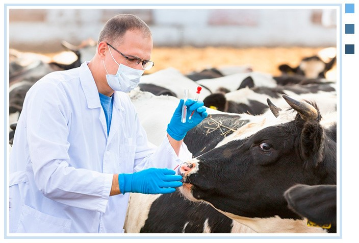
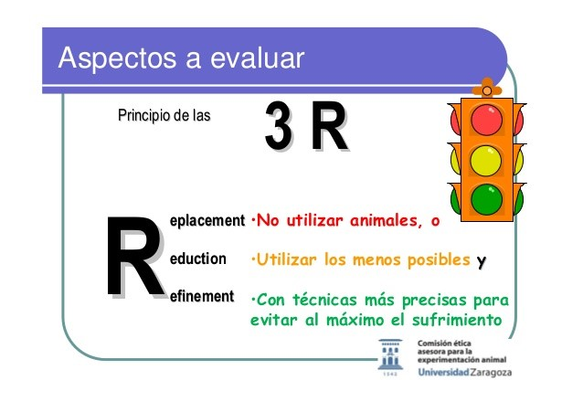

Importancia
El bienestar animal se logra si se cumplen aquellas condiciones en las que se satisfacen las necesidades físicas y de comportamiento de un animal. Se deben entonces garantizar las condiciones adecuadas de alojamiento (temperatura, humedad, iluminación, ruido), de nutrición (acceso al agua y a la comida) y de sanidad (higiene y prevención y control de enfermedades).
La gran diversidad de especies que pueden ser usadas en experimentación nos obliga a considerar las necesidades particulares de cada una de ellas, por ejemplo, en su vínculo con el ser humano, como sucede con los perros domésticos (Canis lupus familiaris). En otras especies que son más desconocidas, la investigación de las preferencias de los animales fuera de sus hábitats naturales ha permitido que fueran los propios animales los que guiaran las modificaciones necesarias en los hábitats en los que se mantienen los animales de experimentación. Hay dos abordajes posibles en los cambios que deben implementarse, que no se excluyen mutuamente: la disminución de las acciones negativas, es decir, aquellas que pueden producir dolor o distrés, como la simultaneidad de especies en un bioterio, y el aumento de las acciones positivas, esto es, aquellas que aumentan el confort de los animales, como el aumento del espacio o la inclusión de juguetes en las jaulas. En estos últimos casos se trata de pequeñas acciones que pueden tener efectos favorables muy grandes.
Regulaciones Internacionales
En Estados Unidos, la única ley de Protección Animal que regula el tratamiento de animales en experimentación, exhibición, transporte y venta se firmó en 1966 y constituye un estándar mínimo aceptable de bienestar animal1. Esta ley es ejecutada por la Agencia de Cuidado Animal del Departamento de Agricultura [United States Department of Agriculture (USDA)]. En un agregado de diciembre de 1985, la ley de “Estándares Mejorados para Animales de Laboratorio” especifica el significado de “cuidado humano” y menciona temas específicos como sanidad, alojamiento y ventilación. Además, lleva a establecer regulaciones para que se les provea de ejercicio a los perros, y de un ambiente que favorezca el bienestar psicológico de primates no humanos. Junto con otras consideraciones y recomendaciones, establece la formación de los Comités Institucionales de Cuidado y Uso Animal [Institutional Animal Care and Use Committee (IACUC)].
En 1993 se produjo el primer encuentro del Centro Europeo para la Validación de Métodos Alternativos [European Centre for the Validation of Alternative Methods (ECVAM)], en el que se decidió que era prioritaria la implementación de “las tres erres” (reemplazo, reducción y refinamiento) para la producción y control de calidad de productos biológicos. A partir de ese momento, el ECVAM se dedica a promocionar estos principios a través de diversas actividades y contribuciones financieras6. Los informes sobre bienestar animal elaborados por este centro son documentos de referencia en la materia y se están utilizando en los programas de entrenamiento en control de calidad de vacunas de la Organización Mundial de la Salud [World Health Organization, (WHO)] en Ginebra
La serie de principios-guía internacionales para la investigación biomédica que involucra animales enunciada por el Consejo para la Organización Internacional de Ciencias Biomédicas [Council for International Organization of Medical Sciences (CIOMS)] y el Consejo Internacional para la Ciencia de Animales de Laboratorio [The International Council for Laboratory Animal Science (ICLAS)] ha servido de marco reglamentario desde que fueron escritos por primera vez en 1985. En su última actualización de diciembre de 20127, se enuncia una serie de consideraciones que debería tener en cuenta la comunidad científica para el uso de animales vertebrados, tanto en actividades científicas como docentes. Entre otras recomendaciones, enuncia que los animales deberían ser utilizados solo si fueran necesarios y si su uso estuviera científica y éticamente justificado. Recomienda asimismo la incorporación de los principios de las tres erres en el diseño y la ejecución de actividades que involucren animales.
Reglas de las tres Erres: Reemplazo, Reduccion, Refinamiento
Se están haciendo esfuerzos para lograr el “reemplazo” de los animales de laboratorio en los ensayos de rutina por medios alternativos, como modelos matemáticos, simuladores computarizados o sistemas biológicos in vitro. En la Argentina, por ejemplo, el control de eficacia de las series de vacunas destinadas a la prevención de la fiebre aftosa se realiza actualmente por serología. El método de “protección a la generalización podal”, que implica el desafío de bovinos con virus vivo, ha quedado restringido a las pruebas de registro de nuevas vacunas y ha sido reemplazado por un test de ELISA en fase líquida para las pruebas de serie5,10. Cuando no existen otros sistemas que puedan reemplazar el uso de animales vivos, debería lograrse la “reducción” en el número de animales utilizados al mínimo que permita llegar a los resultados buscados. Se entiende como “refinamiento” a la obligación de estipular el uso de métodos para determinar el dolor o el estrés en los animales, el uso de métodos no invasivos, y, en caso de ser imprescindible, el uso de los anestésicos, analgésicos y tranquilizantes adecuados, o la aplicación de eutanasia anticipada en los animales involucrados en los experimentos. El costo y la conveniencia no pueden anteponerse a estos tres principios y las autoridades regulatorias deberían vigilar su cumplimiento.
